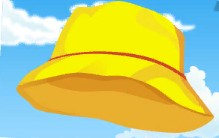
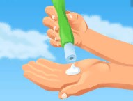
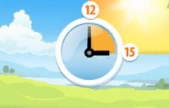

ЛЬЁТ НА ЗЕМЛЮ СОЛНЦЕ И ТЕПЛО И СВЕТ…

|
Носи головной убор, чтобы защититься от палящего солнца. |

|
Пользуйся солнцезащитным кремом, чтобы не получить солнечные ожоги. |
Пей много жидкости, потому что потея, человек теряет много влаги, что небезопасно для организма. Лучше всего – тёплую воду. Старайся не пить ледяную воду в жару – так ты можешь простудиться. |
|

|
Ограничивай своё время на солнце. Если у кого-то из твоих друзей появились следующие симптомы: шум в ушах, головная боль, тошнота, головокружение, это признаки солнечного удара, нужно немедленно обратиться к врачу! |
Источник и подробная информация о действиях на сайте:
http://www.culture.mchs.gov.ru
ТЕЛЕФОН СЛУЖБЫ СПАСЕНИЯ: 112